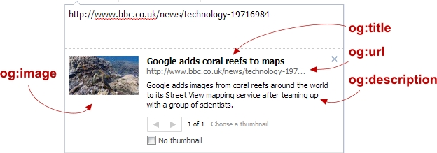

Social Media
Social media needs to play a huge part in any websites marketing strategy:
- Making your site appear compelling over social media can massively increase your potential customer base
- It's possible to control visually how your site appears when it's shared
- You can in effect create an advert for your website
Facebook Open Graph Tags
You can use Facebook's Open Graph tags to take control over how your content appears when it's shared on Facebook. They're implemented as an attribute within <meta> tags.
<head>
<meta property="og:title" content="Title Here" />
<meta property="og:type" content="article" />
<meta property="og:url" content="http://www.example.com/" />
<meta property="og:image" content="http://example.com/image.jpg" />
<meta property="og:description" content="Description Here" />
</head>

Twitter cards
Similar to open graph, Twitter lets you control how your website is displayed using something called a Twitter card. Just like Open graph, the information is implemented as an attribute within your pages <meta> tags.
<head>
<!-- Twitter Card data -->
<meta name="twitter:card" content="summary">
<meta name="twitter:site" content="@publisher_handle">
<meta name="twitter:title" content="Page Title">
<meta name="twitter:description" content="Page description less than 200 characters">
<meta name="twitter:creator" content="@author_handle">
<-- Twitter Summary card images must be at least 120x120px -->
<meta name="twitter:image" content="http://www.example.com/image.jpg">
</head>